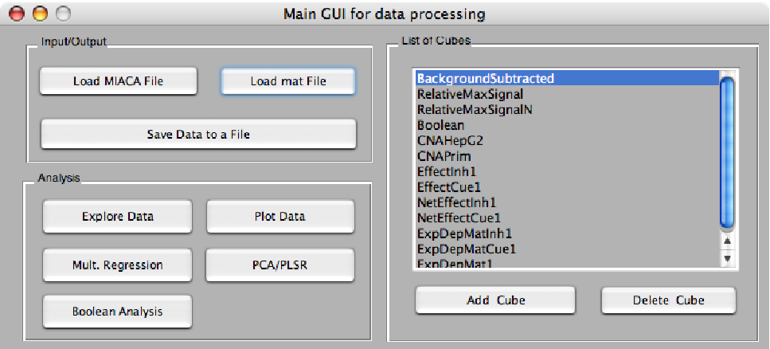

User Interfaces
A simple set of Matlab user interfaces have been coded to assist users who are not familiar with Matlab programming. GUIs have been created that support:
Figure 2:
Screenshot of GuiMain.
|

|
The following GUIs are on the way:
- Multiple Regression
- Boolean Analysis (in combination with CellNetAnalyzer)
- PCA/PLSR analysis
Julio Saez-Rodriguez & Arthur Goldsipe, 2007